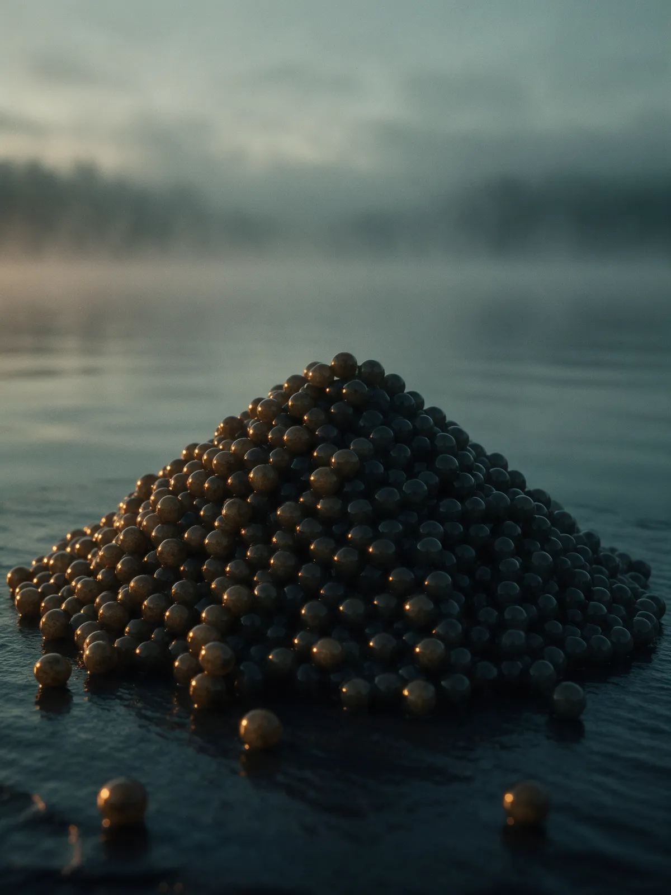

Идея из Парижа
Руки женщин с побережья
Владелица парижского института красоты Ингрид Милле обратила внимание: у женщин, разделывавших рыбу на побережье, лица были обветренными, а руки оставались гладкими.
История бренда в датах: с 1978 года до выхода коллекции в ноябре 2025.
Смотреть коллекциюПять точек пути, от идеи до коллекции на полке. Даты и факты из статьи об истории бренда.
Владелица парижского института красоты Ингрид Милле обратила внимание: у женщин, разделывавших рыбу на побережье, лица были обветренными, а руки оставались гладкими.
Группа «Русский Икорный Дом» начинает работать в рыбоводстве.
Компания начинает выращивать осетровых сама.
Больше десяти лет уходит на разработку. В 2024 году российские учёные получают результат, который ложится в основу бренда.
Коллекция выходит на рынок России: 11 средств, в основе четыре икорных актива.
То, что бренд может подтвердить: цифры из статьи, сертификаты на сайте, участие в выставках.
Здесь появится список выставок, где участвовал бренд: название и год. В статье их нет, ждём список от заказчика.

Своё осетроводческое предприятие в Вологодской области, получение икры, извлечение активных компонентов и состав каждого средства.
Икру получают так, что рыба остаётся живой.
Например, в икорном масле для лица до 10% пропиленгликолевого экстракта.
Сначала научились устранять сам запах на этапе переработки сырья. Крем для кожи вокруг глаз выпущен без отдушки.
Гидролизат лишён аллергенных белков.
Одиннадцать средств на основе четырёх икорных активов: дневные и ночные кремы, сыворотки, масло, маски, пилинг.
Смотреть коллекциюГде купить«Золотое Яблоко» с доставкой по России, бутики «Артиколи», «Весна», ГУМ, зоны бренда в аэропортах Домодедово и Шереметьево.